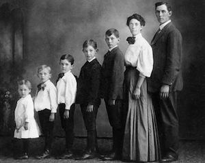

A Mirror Fashion é a maior empresa comércio eletrônico no segmento de moda em todo o mundo. Fundada em 1932, possui filiais em 124 países, sendo líder de mercado com mais de 90% de participação em 118 deles.
Nosso centro de distribuição fica em Jacarezinho, no Paraná." De lá, saem 48 aviões que distribuem nossos produtos às casas do mundo todo. Nosso centro de distribuição:
Compre suas roupas e acessórios na Mirror Fashion. Acesse nossa loja ou entre em contato se tiver dúvidas. Conheça também nossa história e nossos diferenciais.

O crescimento da empresa foi praticamente instantâneo. Nos primeiros 5 anos, já atendia 18 países. Bateu a marca de 100 países em apenas 15 anos de existência. Até hoje, já atendeu 740 milhões de usuários diferentes, em bilhões de diferentes pedidos.
O crescimento em número de funcionários é também assombroso. Hoje, é a maior empregadora do Brasil, mas mesmo após apenas 5 anos de sua existência, já possuía 30 mil funcionários. Fora do Brasil, há 240 mil funcionários, além dos 890 mil brasileiros nas instalações de Jacarezinho e nos escritórios em todo país.
Dada a importância econômica da empresa para o Brasil, a família Pelho já recebeu diversos prêmios, homenagens e condecorações. Todos os presidentes do Brasil já visitaram as instalações da Mirror Fashion, além de presidentes da União Européia, Ásia e o secretário-geral da ONU.